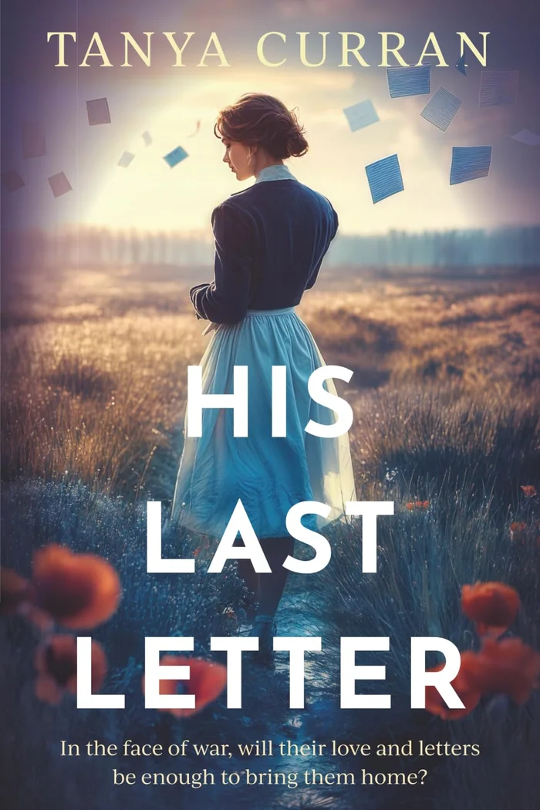

You caught a glimpse of Irene Taylor in His Last Letter, now read her story in The Forgotten Journal.
Irene grows up with her mother in a small flat in the heart of Sydney, escaping into romance novels and writing in her journal. When her only friend Tommy enlists, she is left behind.
With her nursing degree in hand and only a small suitcase, she boards the ship to the South Pacific to care for soldiers on the frontlines. There is the quiet medic, Eddie Montacute, and Lieutenant Hugh Simmonds, who leads his men into the fight. Each with their own secrets.
It is only when the journal is rediscovered that she learns the truth.

His Last Letter
In the face of war, will their love and letters be enough to bring them home?
It is 1939. Jack Sullivan leaves his wife and young son to fight beside his brothers. Lizzie Lewis, a nurse, hears her brother Donald is enlisting. Bert Miller heads overseas to tell the stories from the front lines as a war reporter. Then they wait for letters.
“In ‘His Last Letter’ handwritten letters feature predominantly. Lizzie’s letters to Jack, Bert’s letters back home to his editor and a last letter from a fallen soldier.”Tanya, on Instagram
Pick up a paperback in person
- His Last Letter and The Forgotten Journal at @dulwitches_gifts
- His Last Letter at @a.little.retail.therapy
Earlier novels
- Truffles, Jazz, and ButterfliesWhen you follow your dreams… anything can happen
- Our SacrificesWhat would you sacrifice for love?
About Tanya
Tanya Curran lives in Adelaide and works in healthcare, with a Bachelor of Nursing behind her. Lizzie in His Last Letter and Irene in The Forgotten Journal are nurses too.
She was a panellist at the 2025 Indie Author Book Festival.